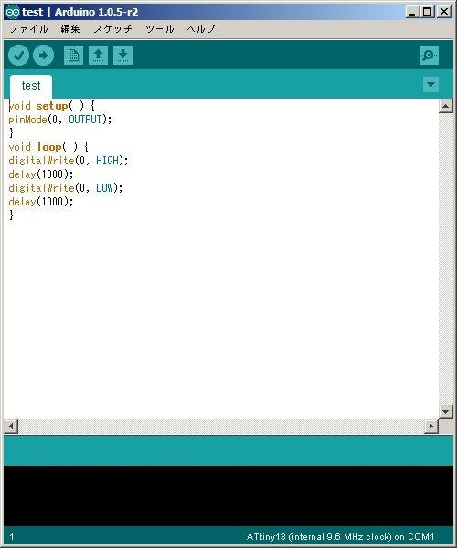

Last edit: Dan 2014-04-21
Hi, all
Because I managed to use the tiny bootloader from Arduino, and reports.
I can write without using ISP ATTINY. As ATMEGA.
Way of thinking:
1. Arduino writing of the program by starting avrdude.
2. If you make a avrdude_wrapper, writing any program can be launched from the Arduino.
Procedure:
1. Install arduino-tiny.
http://code.google.com/p/arduino-tiny/downloads/detail?name=arduino-tiny-0150-0020.zip
2. Move avrdude.exe of Arduino-IDE included.
From C:\Program Files\arduino\hardwear\tools\avr\bin\avrdude.exe
To C:\Program Files\arduino\hardwear\tools\avr\etc\
3. Make a avrdude_wrapper and rename to avrdude.exe
4. Copy avrdude.exe to C:\Program Files\arduino\hardwear\tools\avr\bin\
5. Edit "Prospective Boards.txt" within arduino-tiny.
6. Case attiny13,Add the following lines: 856=1024-2*84(bytes)
attiny13-8.name=ATtiny13 (internal 9.6 MHz clock)
attiny13-8.upload.protocol=arduino
attiny13-8.upload.speed=9600
attiny13-8.bootloader.low_fuses=0x7a
attiny13-8.bootloader.high_fuses=0xef
attiny13-8.upload.maximum_size=856
attiny13-8.build.mcu=attiny13
attiny13-8.build.f_cpu=9600000L
attiny13-8.build.core=arduino
attiny13-8.build.variant=tiny8
How to use: (Case attiny13)
① write a Tiny Avr/Pic Bootloader+ firmware to ATtiny13A,
Setting of the fuse bits: High = 0xEF, Low = 0x7A
② Connection of ATtiny13A(VDD,VSS,TX,RX,RESET)
Case bootloader_13A_84w_r4 within Tiny_Avr-Pic_Bootloader+ (v0.8.3.1)
Serial RXD(Signal level after conversion) == ATtiny13A_softserial_TX=PORTB,4
Serial TXD(Signal level after conversion) == ATtiny13A_softserial_RX=PORTB,3
Serial DTR(Signal level after conversion) == ATtiny13A_RESET=PORTB,5 (0.1uF)
③ Starting the Arduino
④ Tools-board, Select ATtiny13(internal 9.6MHz clock).
⑤ Tools-Serial Port, Select COM port.
⑥ Load Sketch of attiny.
⑦ File-Upload
Bootloader was written in ATtiny13A is reset automatically to ATtiny13A at this time to start.
Tiny Avr / Pic Bootloader + host program starts automatically ATtiny13A to HEX file transfer.
⑧ Sketch Once all files have been successfully uploaded, the application starts automatically after about one second.
